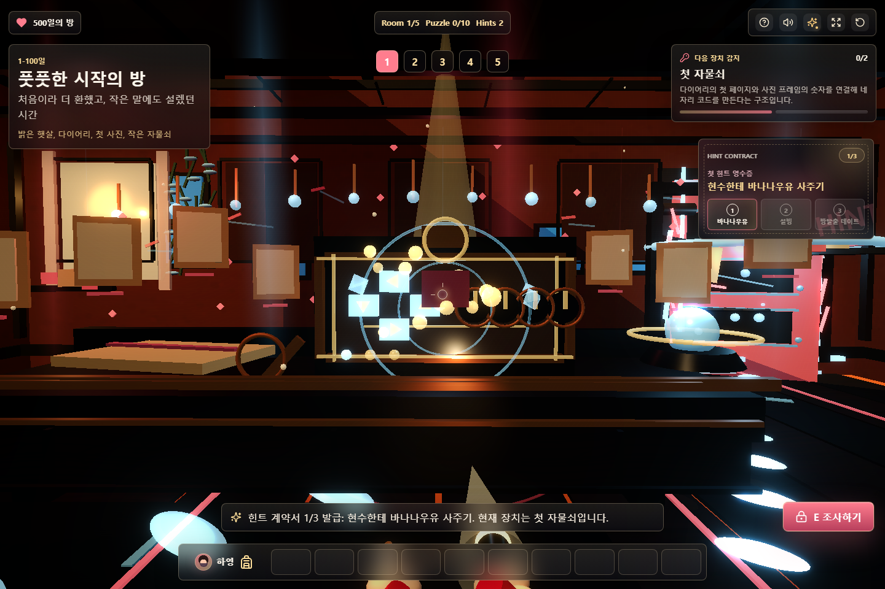
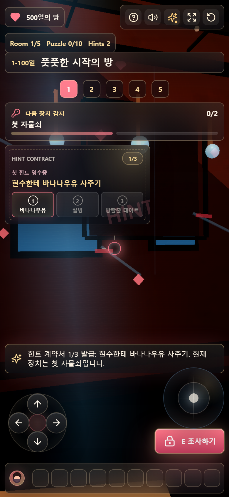

힌트 벌칙을 텍스트 목록에서 게임 계약서 HUD로 승격
기존 힌트 UX는 버튼을 누르면 벌칙 문장이 쌓이는 수준이라 실제 방탈출 장치처럼 느껴지지 않았다. 이번 패스는
Lazyweb에서 확인한 퀘스트 보상, 업적 언락, 비차단 상태 알림 패턴을 참고해 힌트 사용을
3단계 계약서 티켓으로 만들었다.
참고 패턴
- Discord Quests류의 단계형 퀘스트/보상 구조: 진행 단계와 남은 보상을 한눈에 보여준다.
- 업적 언락 모달 패턴: 방해가 되지 않으면서도 방금 일어난 사건을 기념한다.
- 다크 게임 상태 알림 패턴: 플레이 화면을 가리지 않는 HUD 카드와 짧은 상태 문구를 사용한다.
적용 내용
- 힌트 벌칙을 구조화된 데이터로 변경해 라벨, 축약 라벨, 단계 설명, 톤을 분리했다.
- 힌트 사용 시 HUD에
Hint Contract카드가 뜨고 현재 벌칙 티켓이 강조된다. - 데스크톱과 모바일 모두 1/3, 2/3, 3/3 진행도를 명확히 보여준다.
render_game_to_text()에hintPenaltyUX,activeHintPenalty,hintPenaltyStage를 추가해 자동검증 가능하게 했다.- 모바일에서는 기존 숨김 처리 대신 사건 파일 아래에 압축형 카드로 배치하고, 장식 스탬프가 글자를 덮지 않도록 레이어를 분리했다.
검증 캡처


QA
npm run build통과.npm run verify:game통과. 데스크톱/모바일 힌트 사용 후 DOM, 상태값, 스크린샷을 검증한다.npm audit --omit=dev통과, 취약점 0개.- 모바일 레이어 재검증: 카드 장식 스탬프
z-index: 0, 티켓 텍스트 레이어z-index: 1. - develop-web-game Playwright 하네스 통과.